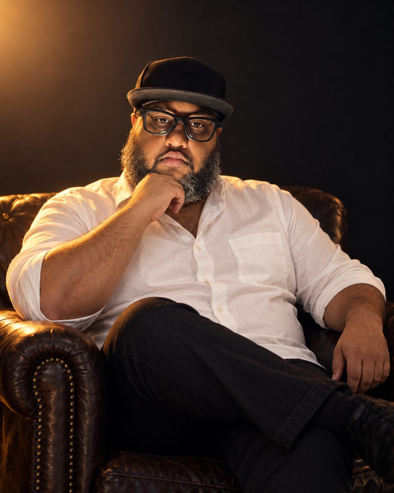
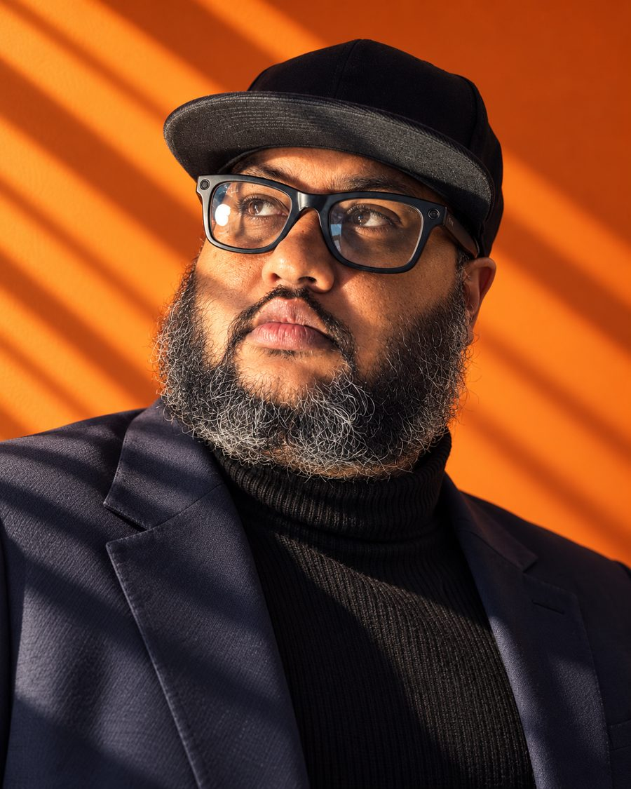
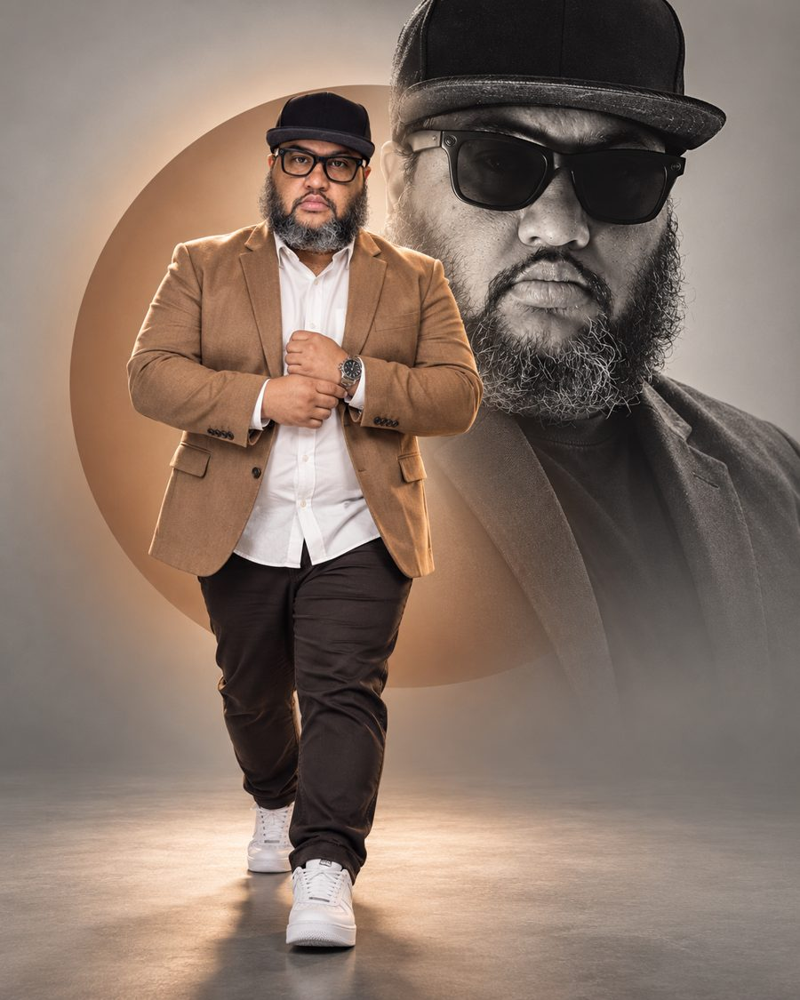
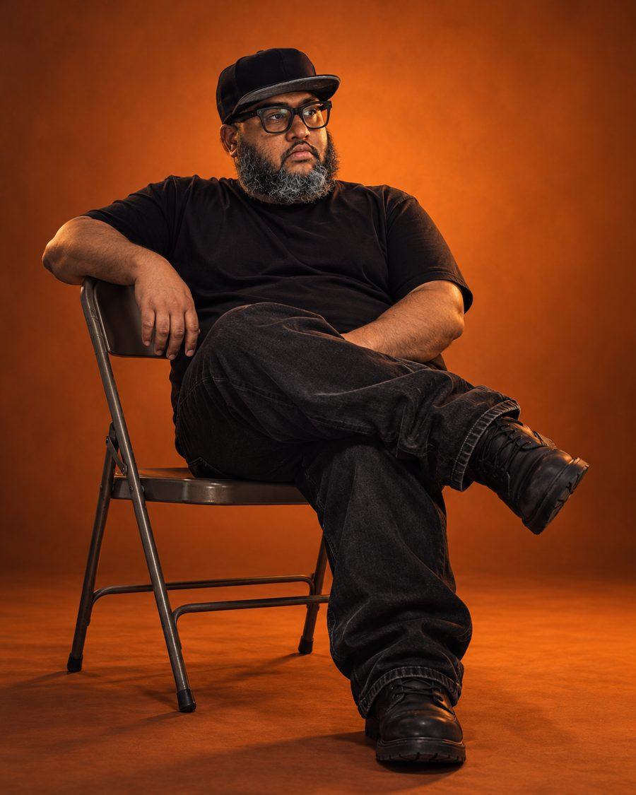

@EUGUIDASILVA
5 prompts de retrato de estúdio
Os mesmos do carrossel. Nenhuma dessas fotos passou por um estúdio: todas saíram de selfies de celular.
- Toque em Copiar prompt no retrato que você quer.
- Abra o ChatGPT ou o Gemini, anexe uma foto sua com o rosto bem visível, cole o prompt e envie.
Foto com boa luz e rosto de frente dá resultado mais parecido com você.

Poltrona de couro
Create a moody studio portrait of the person in the attached photo, keeping their exact face, skin tone, body shape, hair and accessories. Medium-wide shot at eye level: seated in a dark leather chesterfield armchair, one leg crossed, one hand resting under the chin, calm and confident gaze into the camera. White button-down shirt with open collar, dark trousers. Light: a single warm golden light from the upper left, deep soft shadows over the body and the chair. Almost black background with a faint warm glow in the upper left corner. Shot at f/2.8, real skin texture. Vertical 4:5. No text.

Luz de persiana
Create a high-fashion close-up portrait of the person in the attached photo, keeping their exact face, skin tone, hair and accessories. Head slightly raised, gaze up and out of the frame, contemplative expression. Black ribbed turtleneck under a dark navy blazer. Background: smooth, vibrant deep orange wall. Strong direct side sunlight through a window blind casts sharp diagonal shadow stripes across the wall, the face and the shoulder. Visible skin pores, detailed hair texture, reflections on glasses if they wear any. Vertical 4:5. No text.

Dupla personalidade
Create a modern editorial poster of the person in the attached photo, keeping their exact face, skin tone, body shape, hair and accessories. Front: full body, walking slowly toward the camera in an open light brown blazer, white shirt, dark trousers and white sneakers, one hand adjusting a watch. Behind: a large black-and-white close-up of the same person wearing dark sunglasses, with a mysterious expression. Light gray backdrop with a soft light brown circle behind the main figure. Bold studio lighting, hyper realistic, lifestyle fashion campaign. Vertical 4:5. No text.

Fundo laranja
Create a studio photo of the person in the attached photo, keeping their exact face, skin tone, body shape, hair and accessories. Full body, sitting relaxed on a metal folding chair, legs crossed, one arm over the backrest, face turned to the side. Black t-shirt, black baggy jeans, black boots. Background and floor: seamless dark orange paper. Soft, minimal light with sharp shadows and a moody atmosphere. Real skin texture, modern editorial look. Vertical 4:5. No text.
Campanha de óculos
Create a luxury eyewear campaign photo of the person in the attached photo, keeping their exact face, skin tone, body shape and hair. They wear bold black-framed glasses. Low camera angle, standing between oversized white architectural blocks. Dramatic orange sunset light through large windows, long geometric shadows on the white surfaces. Black shirt and black blazer. Minimal black, white and orange palette, crisp reflections on the frames, soft background blur, magazine-quality editorial lighting. Vertical 4:5. No text.